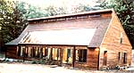
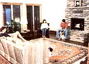
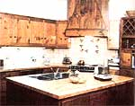
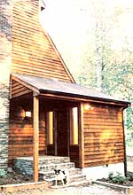
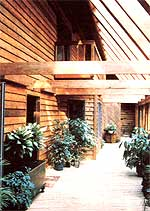
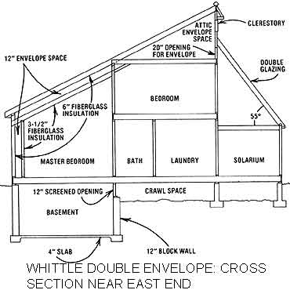
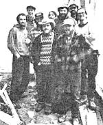

Few new housing designs have drawn as much attention - or caused as much controversy - as has the double-envelope. Pioneered in 1977 by Lee Porter Butler and Tom Smith in a house near Lake Tahoe, Calif., the two-shell concept has gained an enthusiastic following. At the same time, however, the theory behind the thermal envelope has created a stir among solar designers.
When the Smith house was built, the dynamics of its performance were completely theoretical. No one had carefully instrumented such a building, and - accordingly - many architects and engineers reserved their acclaim, pending the availability of data on the efficiency of distribution and storage of the solar heat taken in through the home's large south facing glass area.
Today there are hundreds of double envelope houses around the country, and the performance of the concept has been well documented. Very few experts now question the fact that thermal-envelope buildings are quite efficient, but the quibbling over why they work and about how well they compare with other passive designs continues.
The "collector" system for a thermal envelope house is a heat-producing sun space (which can, in many climates, double as a year-round greenhouse). It's the method by which the sun space is incorporated into the structure's heating system that sets this sort of dwelling apart from other solar-heated houses.
As the term "double envelope" implies, such a building is actually a house within a house. The exterior shell is load-bearing, and generally has a minimum of R-19 insulation. Between the outer and inner skins lies an air space (usually at least a foot wide) which extends from the east to the west end of the house along the roof line and the north wall. The inner wall is generally thinner - since the small temperature difference between the building's interior and the air space requires less insulation - and supports only the structure of the living space. The passageway between the two walls is linked to the greenhouse by a crawl space or basement, which feeds air up through gaps in the boards of the solarium floor
The circulation of air through the envelope is entirely passive. The system takes advantage of the fact that warm air is less dense (and therefore more buoyant, since gravity's influence is reduced) than is cold air. Sun-heated currents rise in the greenhouse and enter the envelope at the room's peak, while the air between the shells - and particularly that along the north wall - loses heat and falls. The solar-heated air is then pulled through the passageway and the subfloor area, and returns to the sun space from below.
Furthermore, as the air passes through the subfloor area, some of the heat it still holds is absorbed by the surrounding earth, rock and/or masonry. These massive materials take in and store the warmth as long as they're cooler than the circulating air. During the evening, however, the storage temperature may actually exceed that of the circulating air, which causes the thermal mass to give up heat.
A double envelope also taps its storage passively by reversing the convective loop. During the night the structure's greatest heat loss is through the expanse of glass in the sun space. That cooling causes air to fall to the floor of the greenhouse, while the (relatively) warmer air of the storage area rises and is forced up the north wall cavity. The continual imbalance in pressure then keeps the loop flowing.
In the summertime, however, the sun space is likely to gain far too much solar energy - despite the fact that the tilted glass is oriented to admit winter, but not summer, sun. To prevent overheating, vents are usually set into the roof peak of an envelope house, allowing the rising hot air to escape. And in some designs, "cool pipes" (air intake tubes buried in the ground, see the article on page 128 for a fuller explanation of this system) are linked to the crawl space so that earth temperature air can be drawn in and distributed through the envelope.
The energy-saving capabilities of the envelope design are numerous. For one thing, a great deal of solar heat is taken in through the greenhouse, and at least some excess warmth is stored in the crawl space for use during the night or on cloudy days. Consequently, most double envelope houses require very little backup heat. In fact, they often satisfy 80 percent (or more) of their thermal needs directly from the sun.
Now there's no question that a large part of the energy efficiency of such structures does result from their thick insulation. The two shells and large air gap produce a total R-value that typically exceeds 30! In addition, the double walls reduce infiltration (direct air leakage) to the living space and dramatically improve the thermal resistance of any north-facing windows, because of the roughly 12-inch-wide air space. (In fact, that gap can, in effect, increase window R-value by as much as 4 - without producing the condensation that tends to be a problem in conventional multipane windows.)
Another thermal benefit of the envelope concept shows up in the form of comfort. Because the air circulating inside the envelope is significantly warmer than that outdoors, the difference in temperature between the living area and the air passage is relatively small. Thus the heat loss for the inner wall is less than that of an equivalent insulative fraction of a single wall whose total R-value equals the double envelope's. As a result, the surfaces of the envelope's interior walls remain warmer than would equally insulated single-layer walls.
Envelope home residents also enjoy pleasantly stable humidity through the winter, since moist greenhouse atmosphere is continually circulated through the air space and can be admitted to the living quarters by cracking a door or window. (In the summer, however, excess humidity - and heat - is vented at the sun-space peak.) Furthermore, the constant but gentle and silent circulation of air prevents stagnation and lends a balmy feeling to the interior environment.
As we mentioned earlier in this article, many double-envelope homes have been built in the last couple of years. The bulk of them have been designed, and in some cases constructed, by either Lee Porter Butler and his firm, Ekose'a, or by Don Booth and Community Builders in New Hampshire. There are, however, regional double-envelope-house contractors springing up, and one of the more productive of them is a Virginia group called Alternative Builders. (Please see "Alternative Builders: An Alternative Business" below for an introduction to the numerous activities of this unique firm.) Alternative Builders has now erected six double envelopes, the most recently completed of which - shown in the accompanying Image Gallery - belongs to Tom, Claire and Tommy Whittle.
The family's home is located in the Blue Ridge Mountains of Virginia, and sees approximately 4,800 heating degree-days. The double-envelope design was particularly appealing to the Whittles because it combined energy efficiency with lots of glass - and they definitely didn't want to be shut away without a view of the lovely mountains surrounding the site.
Consequently, as they worked with Alternative Builders on the design of their home, the Whittles decided to incorporate two small windows on the north side of the structure and two more on the west end (to provide a view of the sunset). On the eastern exposure, however, there are only three tiny windows and a below grade door (for basement access from the outside). The main entry is an air-lock vestibule located at the west end of the sun space, and there are two other doors in the solarium.
The exterior wall is framed with 2-by-6s on 24-inch centers, and the cavities are filled with fiberglass insulation. All the windows in the outer shell are double glazed, including 420 square feet of the sun-space glass (it's angled at 55 degrees to take maximum advantage of the winter sun). An additional 160 square feet of vertical glass is set into the front of the solarium, and a short row of crank-open windows serves as the vent at the roof's peak.
The inner shell is built from 2-by-4s, on 16-inch centers, and is fitted with 3 1/2-inch fiberglass insulation. The wall is positioned so that the air space is no less than 12 inches, and - in fact - it's a great deal wider in the portion of the passage that doubles as an attic. Vapor barriers of 4-mil polyethylene line both sides of the air space, to keep moisture from penetrating the insulation and to prevent fiberglass shreds from getting into the circulating air. Since the temperature difference between the inner wall and the buffering zone is small, single glass was used throughout.
To comply with fire codes, Alternative Builders designed and built a damper - situated in the north wall - that's controlled by a fusible link. In the event of a fire, the device will close and prevent smoke from moving through the envelope.
The building's subfloor loop consists of a partial basement and a 40-inch-deep crawl space. The latter has four inches of earth lying atop a sheet of 4-mil polyethylene (for moisture protection). The earth itself is uninsulated, but the foundation and footings are lined with 1-inch extruded polystyrene. The backup heater for the dwelling, a large woodstove, is installed in the basement so that the heat it produces can circulate in the envelope.
Air returns to the greenhouse through its floorboards, which were made by ripping 2-by-6s, then spacing them on the joists in a pattern that allows one square foot of open area for each foot of the solarium's length.
The Whittle residence was completed in August of 1981 for a cost of $130,000. With 4,000 square feet of finished space, that somewhat awesome figure works out to a little less than a very reasonable $33 per square foot. It's likely that a smaller double envelope would be slightly more expensive per square foot than was the Whittles'. But the figure becomes particularly impressive when the quality of the construction is taken into consideration. Alternative Builders turns out custom homes and maintains high standards. For example, the roof is thoroughly vented, the kitchen cabinets were built to order locally, and the fireplace is handmade of rock.
Of course, the Whittles are just now riding out the last of the first winter in their new double envelope house, so performance figures haven't yet been compiled. But we did get a chance to talk to the owners of another Alternative Builders double envelope who've recorded its performance for almost two years.
The Kimmels' home is at a lower altitude than the Whittles' and therefore sees only about 3,300 heating degree-days. It's also slightly smaller (3,500 square feet), has minor differences in envelope design, and is set 20 degrees east of south to capture the morning sun effectively. The expected sunshine for the two sites is about equal, though, so the major difference in performance should be in proportion to the difference in the number of degree days that each home is exposed to.
In the middle of their second winter, the Kimmels are still burning up the trees that were cut to clear the site for the house. There's a huge pile of wood yet to be used, and it probably won't be touched until the winter of 1982-83. The 1980-81 heating season consumed less than half a cord of wood for backup heat, and the lowest indoor temperature has been 62 degrees Fahrenheit. During the summer, deciduous trees provide the Kimmel house with lots of shade, and the glass in the solarium (there's a total of about 550 square feet, angled and vertical) is arranged to prevent sunlight from hitting the living area. Consequently, the warmest inside temperature was 82 degrees (in July 1981) and the family reports that the humidity level has always remained pleasant, as a result of the constant air circulation.
Much of the quibbling about double-shell houses centers on the fact that the air cavity must lose heat (particularly in the north wall) in order to power the convective loop. And it's true that, given the relative temperature difference between the interior and the cavity and the cavity and the outside, most of the passageway's BTU will escape to the outdoors.
Technicians have calculated that the efficiency of the convective circulation system provided by the double envelope is far lower than that of a blower system powered by an electric motor. And there's a growing consensus among designers that the double envelope suffers a slight loss of thermal efficiency because of its air circulation system, as well. The trade-offs, of course, would be the noise of the blower and the need for electricity to run it.
Early doubts about whether or not the envelope flow pattern actually reverses at night have recently been shown to be misplaced in most cases. Though the flow rate is undoubtedly much slower at night (perhaps about two-thirds of the daytime air movement, according to a computer simulation developed by Joe Kohler and Dan Lewis of Total Environmental Action, Inc. in Harrisville, N. H.), the double-shell dwelling's greenhouse is warmed at night by air circulating from the crawl space through the north wall and roof cavities.
The question of how much heat is actually stored in the crawl space is much more difficult to answer, however. The rate of thermal transfer to the earth or gravel depends on a number of factors - including the moisture level in the storage medium (water stores much more heat, and transfers it more quickly, than does earth), the possibility of stratification of air flow (with the warmer air collecting near the floor and cooler air sinking down against the earth), the particular type of soil involved, and the temperatures of the air and the earth. Rough estimates of storage capability suggest that only between 10 and 25 percent of the available BTU can be stored, but even at that relatively low rate, it's now acknowledged that the tempering effect of the earth on the envelope air does play an important role in the double shell design's energy efficiency.
Though there's much more known today about the double-envelope concept than was the case four years ago when the Smith house was completed, it's obvious that the available data still don't answer all questions. Thermal-envelope houses are very popular among owners because they're both efficient and pleasant to live in. And when one considers that the raging controversy among experts really concerns only a few percentage points of efficiency one way or the other, the double envelope is likely to enjoy even greater popularity in the future.
The firm that built the house shown in the photos accompanying this article is one branch of a thriving "back to the country" conglomerate based in Independence, Va. Alternative Builders was conceived over five years ago as a result of three friends' common interest in alternative energy; but it wasn't until 1979 that the triumvirate officially founded the company (which included one member's woodstove business: Goosecreek Heating). The group has since built just about every sort of energy-efficient house you can imagine.
Constructing houses and selling woodstoves weren't quite enough to satisfy the energetic trio; though, so about a year ago they opened Sunergy Systems. The new business markets a unique line of solar collectors that are efficient, very light and quite strong.
The Sunergy water collector - conceived by an ingenious fellow named Nelson Brown - uses two aluminum plates, held together only by residual electrostatic charge (from manufacturing), as the absorber. Water trickles down between the sheets and thus contacts a much larger surface area than is possible in a tube-type water heater.
The company's air collector is patterned after Mother's Heat Grabber, September/October 1977, but has a number of refinements - including a separate aluminum absorber, a thermostatically controlled blower, directable outlets and a strong but simple second-story mounting kit.
When Mother Earth News staff members visited Alternative Builders/Sunergyl Goosecreek Heating in August of 1981, they found the businesses themselves nearly as interesting as the products they make. The corporation has managed to expand smoothly, largely because the original three partners have practiced what we'd call enlightened management. Each of the 20-plus fulltime employees of the three-way enterprise receives stock in the company as a year-end bonus, and thus earns an increasing share in the corporation as his or her tenure and productivity grow.
The goal of the founders is to employ as many people as is practical, to grow gracefully, and to pass the fruits of expansion on to the workers. Judging by their products and the enthusiasm of every individual we met during our visit, we'd say that their wishes are coming true.
|
 MOTHER EARTH NEWS STAFF The double-envelope house is characterized by its large south-facing glass area and its clerestory windows at the roof peak. |
 MOTHER EARTH NEWS STAFF The Whittle family enjoys one of their first evenings in their new energy-conserving double-envelope home. |
 MOTHER EARTH NEWS STAFF Custom kitchen cabinetry is a highlight of the structure's aesthetic side. |
|
 MOTHER EARTH NEWS STAFF Alternative Builders incorporates a vestibule on almost every house the firm builds. |
 MOTHER EARTH NEWS STAFF This view from west to east in the solarium shows the second-story balcony, the floor slots for convective loop flow, and plenty of healthy greenery. |
 MOTHER EARTH NEWS STAFF Whittle double envelope, cross section near east end. |
|
 MOTHER EARTH NEWS STAFF Part of Alternative Builders' crew. |
|
|